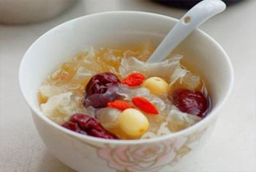
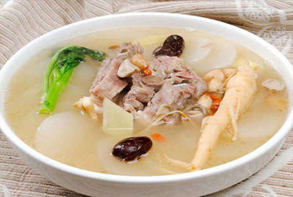
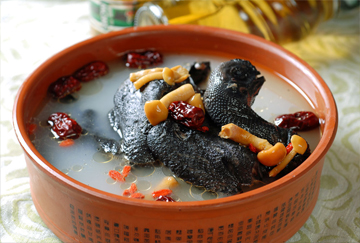

健康养生

银耳莲子羹
羹浓味甜，口感浓甜润滑，美味可口。此汤具养阴润肺，生津整肠之效，有润肺养胃、美容养颜的功能，适用于伴有涕中带血的鼻咽癌病人和女性朋友。
莲子性平、味甘涩，有益心、补肾、止泻、固精、安神之效。大枣性温、味甘，其维生素含量为水果之冠。
【点击查看更多】

萝卜炖羊肉
萝卜炖羊肉是用白萝卜、羊肉制作的一道家常菜。萝卜软烂，清香味淡，具有清痰止咳，温中益气之功效。 增强机体免疫功能:萝卜含丰富的维生素C和微量元素锌，增强机体的免疫功能，提高抗病能力。
【点击查看更多】

乌鸡汤
乌鸡汤属于粤菜，有着悠久的历史，以特有的菜式和韵味，独树一帜，粤菜是中国著名八大菜系之一，在国内外享有盛誉。粤菜的主要性格为:取之自然，烹之自由 ，食之自在!
粤菜广义上来说由广州菜(亦称广府菜)、潮州菜(亦称"潮汕菜")、东江菜(属客家菜)组成，以广州菜作为代表。
【点击查看更多】版权所有：舌尖上的美食网